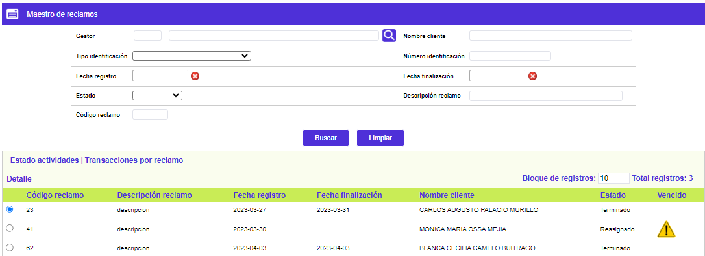
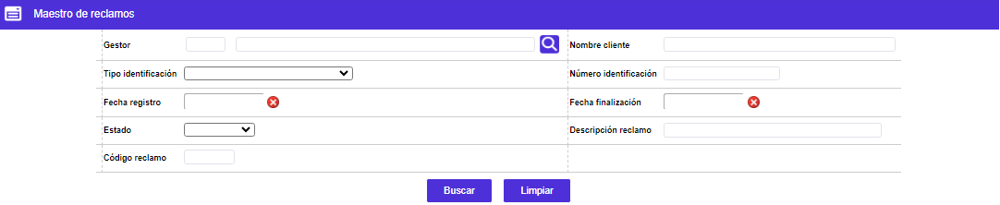
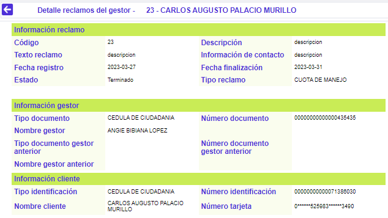
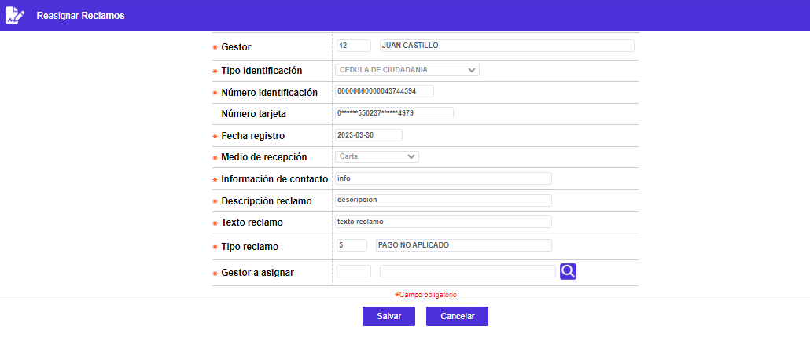

Maestro de Reclamos
Mediante este formulario se visualizan los datos de la estructura en la cual se: consultan, tramitan y reasignan los reclamos existentes, ya que permite administrar y hacer seguimiento a los mismos. El sistema mostrará los reclamos correspondientes a los diferentes gestores, y que se encuentren en cualquiera de los siguientes estados: Asignados, Reasignados o Terminados, y así mismo, en la última columna, desplegará un triángulo cuando el reclamo se encuentre vencido según los tiempos asignados o parametrizados al mismo. Para determinar estos días, el sistema consulta la parametrización de las fechas inhábiles y festivas del calendario.
El formulario cuenta con los enlaces: Detalle, Reasignar y Estado actividades. Adicionalmente, cuenta con un filtro de búsqueda.

Filtro: Se pueden realizar consultas a través de las siguientes opciones:

Gestor |
Campo que dispone de una lista de valores adjunta, de la que puede seleccionarse el gestor para el cual se desean consultar los reclamos asignados o a su cargo. |
Nombre cliente |
Campo alfanumérico de 30 caracteres, en el que puede digitarse el nombre del tarjetahabiente al cual está asociado el reclamo que se desea consultar. |
| Tipo de identificación | Campo que dispone de una lista de valores tipo combo, de la cual se puede seleccionar el tipo de documento asociado al tarjetahabiente al cual corresponde el reclamo que se desea consultar en la base de datos. |
| Número de identificación | Campo numérico de 20 posiciones, en el que puede ingresarse el número de identificación del cliente asociado con el reclamo que se quiere consultar. |
| Fecha registro | Campo que, mediante la funcionalidad de un calendario, permite indicar la fecha inicial en la cual se pudo haber radicado el reclamo que se desea consultar en la base de datos. |
| Fecha finalización | Campo que, mediante la funcionalidad de un calendario, permite indicar la fecha final o hasta la cual se pudo haber radicado el reclamo que se desea consultar en la base de datos. |
| Estado | Campo con lista de valores tipo combo, de la cual se puede seleccionar entre: Asignado, Reasignado o Terminado, según el punto en el que se encuentren los reclamos que se desee consultar. |
| Descripción reclamo | Campo alfanumérico de 60 caracteres, en el que puede digitarse la descripción del reclamo que se desea consultar. Permite utilizar el signo %, a manera de comodín, en la búsqueda. |
| Código reclamo | Campo numérico de 4 dígitos, en el que puede digitarse el código del reclamo que se desea consultar, el cual fue asignado automáticamente por el sistema. |
Detalle: Si el usuario invoca la opción Detalle se despliega el siguiente formulario el cual contendrá la información detallada del reclamo y su trámite.

Reasignar: Cuando se utiliza esta opción, se despliega el siguiente formulario mediante el cual se puede reasignar manualmente otro gestor a un reclamo que ya tenga gestor asignado, por circunstancias que la entidad así determine.
En este formulario ninguno de los campos desplegados es modificable, excepto el campo Gestor a asignar.

Gestor a asignar |
Este campo despliega lista de valores con los gestores que se encuentren parametrizados en todas las actividades del reclamo seleccionado e indica el nuevo gestor que deberá tramitar el reclamo. |